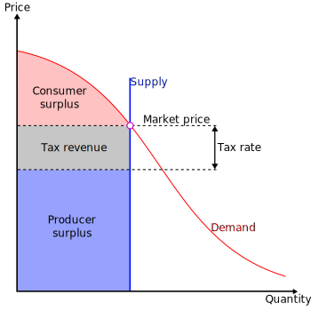
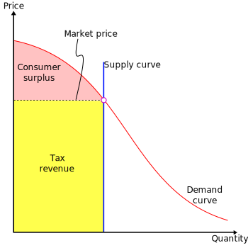
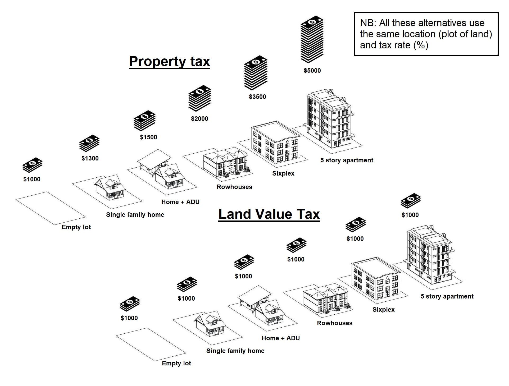
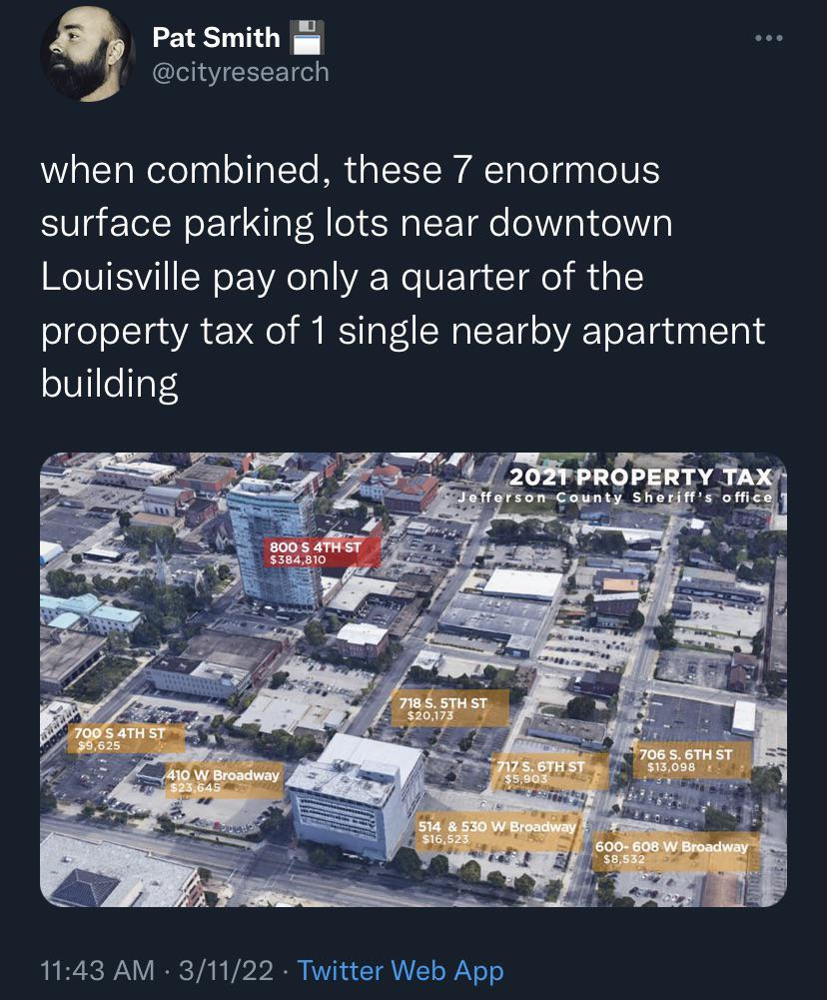

Georgism Crash Course
Table of Contents
- 1. What Georgism Is, and Why It’s Worth Trying
- 2. Explaining Natural Resource Taxation
- 3. Visual Diagrams And Infographics For Understanding Georgism
- 4. The Space Utility Optimization Principle
- 5. NRT as a More Efficient Way to Bootstrap All Prices
- 6. Famous Economists Who Have Endorsed LVT
- 7. Any Potential Drawbacks?
1. What Georgism Is, and Why It’s Worth Trying
Georgism1 is the position that income tax, sales tax, property tax, and all other taxes should be abolished and replaced with taxes on natural resources (NRT), which would fund all government services. The idea is that society would greatly benefit from overhauling the taxation system:
- Goods and services would become cheaper (due to abolishing sales taxes).
- Employees would command higher wages by getting to keep more of their labor (due to abolishing income taxes).
- Employers would be able to buy more labor for less money (due to abolishing income taxes).
- Housing would be more affordable (due to abolishing property taxes & landlords being incentivized to build more housing per acre).
- People who own buildings wouldn’t be disincentivized to not upgrade them anymore. If property taxes are abolished, then people won’t get penalized for renovating their properties.
- The economic inputs of the economy would get taxed instead of the economic outputs, so there would be incentives to use the inputs (Land & Natural Resources) more efficiently. This is important because there is a fixed, finite amount of valuable land and natural resources on Earth, and we want to avoid resource degradation. Natural resource taxation also wouldn’t penalize people for generating greater economic outputs, unlike the current taxation system.
- NRT would increase economic stability by bootstrapping the entire economy to the prices of its economic inputs. Economic instability is built into the current system since the prices of the economic outputs of the economy depend on an endless circle of other economic outputs that is ultimately grounded by a combination of resource extraction fees, regulations, licenses, taxes, government fiat, etc. Markets generate prices, but they generate them from other prices too, which are ultimately determined by the prices of the economy’s inputs to production.
- Urban sprawl would be non-existent (by eliminating land speculation and encouraging urban space to be optimized).
- Private land monopolies wouldn’t exist anymore.
- Pollution would be disincentivized. Pollution taxes are a logical conclusion from recognizing that land belongs to everyone equally.2
- Since the wealthiest people are naturally the ones who own the most land and the most valuable land, Land Value Tax would reduce economic inequality, because the LVT would mostly fall on the wealthiest members of society.3
- Not only does land value tax tend to fall on the wealthy, but it is also the best tax to place on the wealthy because land cannot leave the country. Even if the possessors of the most valuable land gave up their land and left the country, whoever ends up becoming the new possessors of the land would become the new title holder who has to pay the land value tax. We can be certain that someone will definitely take the land title and pay the LVT if the land is as valuable as it is.
- It is extremely difficult to do tax evasion under LVT, since land cannot be concealed or moved overseas and titles are easily identified, as they are registered with the public. Land value assessments are usually considered public information, which is available upon request. This transparency reduces tax evasion.
- A person who claims land can occupy it as long as they pay the appropriate Land Value Tax for the land that they’re occupying. This resolves Tragedies of the Commons, while simultaneously ensuring that everybody benefits from it, not just the one single person who is occupying the land. This is a win-win, unlike Communism where there is the Tragedy of the Commons (ToC), or Anarcho-Capitalism where there is no ToC, but property owners get unfairly wealthy for value that they did not create.
- When everybody owns land equally2, this ensures that everybody has equal access to the three factors of production: Land, Labor, and Capital. It follows that economic productivity is increased, and wealth inequality is dramatically reduced. The massive wealth inequality that exists today is in large part caused by the skewed and unequal ownership of highly valuable land.
- Replacing all the inefficient forms of taxation with NRT would lead to a simplified tax code that makes taxes straight-forward and easy to file. This would eliminate all the wasteful economic activity that is spent each year looking for tax loopholes, deductions, and lobbying.
- Real estate bubbles and recessions won’t be possible anymore if land is taxed at 100% of its value. The world would be so much better off if Japan’s Lost Decade, the Great Recession, and China’s upcoming real estate bubble and recession never happened. Also note that land speculation is undesirable for all human societies since it is a form of rent-seeking.
- Cities that use pro-Georgist urban planning would have no need for cars and no need to save up as much money to buy houses. For houses, most of the value is concentrated within the land that the house sits on, not the actual house itself. By eliminating the need to buy two of the most expensive items that people will ever buy within their lifetimes, the economy becomes drastically more efficient because all the money being used to buy those expensive things (houses and cars) can now be used to buy more important things instead.
Historically, Georgism used to have millions of followers, until it gradually lost its popularity over the 20th century due to a succession of many unfortunate events. As the linked essay explains, the reasons for why this happened have nothing to do with the rationality nor the feasibility of Georgism.
See the Georgism FAQs page, the Henry George AI Robot, or the Georgism Subreddit for any questions you may have, or continue reading the rest of this webpage.
1.1. The Georgist Theory of Property Versus the OATP
The Original Appropriation Theory of Property (OATP) is a Finder’s Keepers approach to property and land rights. It is also the indefensible culprit behind real-estate recessions, the ever-increasing cost of housing, inefficient urban planning, increased pollution, and so much more.
The Georgist Theory of Property (GTP) can be stated using the following reasoning:
- Every person owns themself.
- Every person thus owns the labor that they produce.
- Every person thus owns anything produced by the combination of their labor and their capital.
- People can trade things that they create with their labor for things that other people create with their labor.
- Land is not created by labor.
- But land is necessary in order to be productive (because it’s one of the three factors of production: land, labor, and capital).
- In order for everybody to have an equal right to be productive4, everybody must have an equal right to land.
- In order to have a free-market economy, everybody must have an equal right to be productive4, otherwise the economy is anti-free-market.
Conclusion: In order to have a truly free-market economy, everybody must have an equal right to land. Likewise, no one should have unchecked ownership of land because they did not create the land, lest the economy be anti-free-market.
The only perspective from which the OATP could be considered “better” than the GTP is from people who already have power and want to maintain their existing power structures. This is indeed the main reason why the world has not adopted the GTP. Power is self-justifying. And then there’s the fact that most people don’t have good economic intuitions for understanding how a Georgism-like system would be more economically efficient for everybody overall.
Read More: Why The GTP Beats The OATP By Every Measure Possible.
Read More: Why Everybody Owns Land Equally.
2. Explaining Natural Resource Taxation
Prices for natural resources should be defined in a principled way5, based on their utility, scarcity, and negative externalities (e.g. pollution). Natural resource taxation should be applied at the point of use, extraction, or degradation. Land should be taxed based on the potential uses of the land, the land’s location value, and the state-provided infrastructure in the region. Biological resources, such as lumber and fish, should be taxed based on sustainability and balancing other uses. (Forests are not just a source of lumber. They also provide wildlife habitat, watershed management, recreation, etc.) Geological resources, such as iron and coal, should be taxed based on their scarcity, long-term value and downstream effects. The use of water (other than rain) should be taxed. Land taxation would take the value of rainfall into account. Air and water pollution should be taxed.
Today, we can observe that there are enormous corporations like British Petrol or De Beers that became super rich due to their monopolies and private ownership over things like oil, natural gas, precious metals, diamonds, etc. Many of these corporations earn billions of dollars every year. But is it really fair that they should get billions of dollars annually, just because they managed to claim the land containing those natural resources before anybody else could, under a Finders’ Keepers system? They certainly deserve some money for doing the labor necessary for extracting those natural resources, but they didn’t do any labor to physically create the resources. That is called rent-seeking, and it doesn’t contribute to economic growth at all. If anybody is going to be making billions of dollars off of selling coal, oil, iron, copper, cobalt, natural gas, etc, it better be the government so that everybody else can pay fewer taxes. Most economists agree that land monopolies and natural monopolies are the greatest monopolies of them all since they have the fewest competing alternatives for when monopolies do form.
We propose that the Earth’s natural resources belong to literally everybody.2 The government manages this collective ownership in order to resolve the tragedy of the commons (hence, we also support creating a global government). Everybody owning natural resources is the same thing as nobody owning natural resources. So, the idea is that if you want to claim natural resources exclusively for yourself, then you need to stake your claim to them by buying them from everybody (the government). Buying the natural resources from everybody (the natural resource tax) is how you establish your private ownership to do whatever you want with them. The alternative to collective ownership of natural resources is private ownership of natural resources, which leads to economic inefficiency.
But collective ownership of natural resources would entitle lazy people to natural resources.
This misses the point. If no one owns natural resources, then obviously, a couch potato doesn’t own the Earth’s natural resources anymore than anyone else does, and vice versa. If you want natural resources, then you have to work for them. And a hard worker will obviously obtain more natural resources than a lazy couch potato. That’s the whole point.
Read More: The Georgist Theory of Property (GTP).
2.1. The Differences Between NRT and LVT
The term “Land Value Tax” (LVT) is used more commonly than “Natural Resource Tax” (NRT), but “land” is an ambiguous concept with many different meanings and definitions. “Land Value Tax” typically refers to either: 1. the economic definition of land, or 2. Location Value Tax. Sometimes, people will even use NRT and Land Value Taxation as interchangeable terms because “land” itself is defined as natural resources that exist in finite supply, in the economic sense of the term. Note that Henry George was explicitly in favor of taxing natural resources:
“The term land necessarily includes, not merely the surface of the earth as distinguished from the water and the air, but the whole material universe outside of man himself, for it is only by having access to land, from which his very body is drawn, that man can come in contact with or use nature. The term land embraces, in short, all natural materials, forces, and opportunities, and, therefore, nothing that is freely supplied by nature can be properly classed as capital.” – Henry George
Since it often isn’t clear which definitions people are using, I prefer to use “Natural Resource Tax” (NRT) to refer to every natural resource (which includes Land Values), “Land Value Tax” to refer to the appraised value of land (which includes Location Value Tax), and “Location Value Tax” to refer to taxes on real estate values.
Location value taxation is a more specific type of land value taxation that only refers to real estate values, which are mainly determined by a location’s proximity to various goods and services in most cases. Location Value Taxation (LVT) is particularly unique since real estate is the one natural resource that every country has in common, and also tends to be the natural resource with the highest economic value. For that reason, location value taxation would be the primary form of natural resource taxation that makes up the majority of government revenue, under Georgism.
Note that “land value” technically isn’t equivalent to a “property tax on the unimproved value of land”. The value of a location has the potential to fluctuate since most of the land value of residential areas is derived from their locations, namely all the businesses, shops, services, etc in the community surrounding that land. In other words, improving the land around the location of a given parcel of land amounts to improving the location (and land) value. This means that, location value tax (and land value tax more generally) will tax improvements to the surrounding land, but not improvements to the land parcel itself. People have a right to own all improvements that they make to land that they possess, when those improvements were made using the fruits of their labor.
Read More: General Single Measurements For Multiple Variables.
Besides real estate, other sources of tax revenue include:
- Extractable resources (mineral deposits and hydrocarbons)
- Severables (forests, fish stocks, etc)
- Restrictions/Taxes on pollution or severance
- Anything that has economic demand that exceeds a fixed supply:
- Geosynchronous Orbits
- Airway Corridors
- Portions of the electromagnetic spectrum
- Domain Names
- Right-of-way (transportation) used by railroads, utilities, and internet service providers
- Et Cetera
All of these would be subject to the appropriate amount of tax, as set by the market for Land Rent.
3. Visual Diagrams And Infographics For Understanding Georgism
Land Economics Part I: Ricardo’s Law of Ground Rent (Downloadable Infographic)
Laying out the foundational economic theory behind Georgism, and illustrating how unequal land distribution helps depress wages.
{kind=link}
Land Economics Part II: Speculation and Idle Land (Downloadable Infographic)
Government Policies Enable Rent-Seeking, Untold Economic Inefficiency, and Lower Living Standards.
{kind=link}
Land Economics Part III: Mortgage Debt and Lending (Downloadable Infographic)
How Land Speculation, Mortgages, and Banks Cause Real Estate Bubbles and Recessions.
Desert Island Economics - Existential Comics
This comicstrip demonstrates how the OATP and private land ownership (and land monopolies) cause wages to fall to subsistence.
{kind=link}

Figure 1: You can download this image by right clicking it and saving it, if you wish. If you do so, you are encouraged to share it and spread the word. (credit to u/The_Great_Goblin on Reddit)
If you would like to view different versions of the graph above, you can view the following links:
3.1. Supply-Demand Curves For Understanding NRT/LVT
The following links show some interactive graphs, charts, numbers for modeling how the mathematics and economics of Georgism work.
- Geogebra: The Law of Rent
- Geogebra: Distribution of Wealth Between Factors of Production
- Geogebra: Land Value Tax Calculator
- Geogebra: Land Value Tax Revenues Relative to Rent and Land Value
- Geogebra: Idle Land, Unemployed Workers Caused by Incorrect Taxation

Figure 2: A supply and demand diagram showing the effects of land value taxation. Since the supply of land is fixed, the burden of the tax falls entirely on the land owner. There is no change in the rental price and quantity transacted, and no deadweight loss.

Figure 3: In this case, land is taxed at 100% of its value, eliminating the landowner surplus completely. The ownership of land becomes worthless except to those who value it higher than market rents.
Figure 2: Perfectly Inelastic Supply, CC BY-SA 3.0, by Explodicle.
{kind=link}
Figure 3: Maximum Taxation With Perfectly Inelastic Supply, CC BY-SA 3.0, by Explodicle.
{kind=link}
3.2. Georgism Compared to Other Economic Ideologies
Unlike Capitalism, Socialism, and Communism, Georgism has never been tried before, and yet it is different from all of them, as it is the only one where everybody is guaranteed equal access to all Three of the Factors of Production. It is definitely worth giving Georgism a chance to see how it performs compared to our current finder’s keepers system.
The following table shows a simplified, yet useful understanding of how Georgism compares to other more widely known economic ideologies, with respect to whether or not each one of the Three Factors of Production is private or public.
| Capitalism | Georgism | Socialism | Communism | |
|---|---|---|---|---|
| Land | Private | Public | Public | Public |
| Capital | Private | Private | Public | Public |
| Labor | Private | Private | Private | Public |
Note the following for what it means for each Factor of Production to be “public”:
- “Land should be public” = “Everybody should have equal access to Land”.
- “Capital should be public” = “Seize the means of production”.
- “Labor should be public” = “From each according to his ability, to each according to his needs”.
Basically, the distinction between whether each factor of production is public or private is whether it is owned by the state or owned by individual entities.
3.3. Why Georgism Would Make Housing More Affordable
Since LVT would make landlords pay the same amount of tax no matter how much or how little housing they build on the same plot of land, LVT would encourage landlords to build more housing. This would make housing more affordable everywhere, whereas property taxes make housing more expensive by punishing landlords who choose to build more housing and punishing people who renovate their properties.
The diagram below helps explain why LVT cannot get passed onto the tenants, whereas property taxes can. Since LVT would increase competition in the housing market by incentivizing landlords to build more housing, housing prices would decrease, while the tax rates stay the same (unless the value of the land changes).
(right-click the images and open them in a new tab to view them in full resolution)
|  |  |
Relevant Video: How to be a Landlord 101: Being A Landlord Gives You The Right To One-Third Of A Household’s Income.
Relevant Video: How to be a Landlord 201.
4. The Space Utility Optimization Principle
Formal Statement of the Space Utility Optimization Principle (SUOP):
“When the optimized arrangement of a collection of objects in 2D or 3D space maximizes the (collective) value or utility that people derive from that space’s optimized arrangement.”
The derived value from the arrangement of objects within a space can be psychological value from the perspective of a single person (e.g. the arrangement of keys on a keyboard, FILO and LIFO storage arrangements, etc), social value from the perspective of a society (e.g. urban planning, memory allocation in computer systems, etc), or even biological value when dealing with the arrangement of organs, tissues, cells, cellular structures, etc within an organism.
With regards to applying the SUOP, some of these phenomena revolve around the most efficient arrangement of system components in a given 2D or 3D space:
- Land Distribution.
- Urban Planning. The most important buildings and areas should be located near the city center.
- Memory Allocation (malloc). The arrangement and allocation of memory in a computer affects the computer’s performance.
- If the human brain had a vastly different arrangement of all the neurological components that make it up, it probably wouldn’t work as well as it does in most cases. Examples:
- The occipital lobe that controls vision is located in the back of the brain instead of the front. I hypothesize that this is done to increase the number of connections with the rest of the brain.
- The left hemisphere of the brain controls the right side of the body, and the right hemisphere of the brain controls the left side of the body. Similarly to the occipital lobe, I hypothesize that this is also done to increase the number of connections of these hemispheres with the rest of the brain, compared to if the same side of the brain controlled the same side of the body.
- The most important functions of the brain (the ones that sustain the organism’s life) are located near the center of the brain, which gives them the best real estate and the closest possible distances to all the other regions of the brain, and especially the spinal cord.
- If the arrangement of organs inside of an organism were different, the various organ systems of the body would work less efficiently, perhaps even ceasing to function correctly at all.
- The arrangement of components on a circuit board is very important. The various versions of the Raspberry Pi have their current circuit board configurations because they were the most effective for its design.
- Similarly, changing even one of the circuit board components of the Ergodox EZ in order to add more memory to the board would require upgrading the processor, which would in turn require changing the entire circuit board.
- LIFO and FILO storage (physical).
- LIFO and FILO data structures.
- The arrangement and layout of GUIs.
- The keys on the keyboard, Qwerty vs Colemak, caps lock vs backspace to the left of the left pinky, etc.
These other concepts revolve around competition for spots within a fixed reserve or supply that can support the objects occupying the spots or spaces within that reserve, particularly when all the spots within the reserve are equally (or near-equally) valuable. They are distinguished from the previous examples by not depending on the arrangement of objects within a physical space, but rather by whether the object is merely occupying the space or not. Many of these spaces aren’t 2D or 3D:
- Tasks and errands compete for our limited attention spans in our finite 24-hour day cycles (so there is a limited number of work/tasks we can do each day). The only way to spend more time doing something is to spend less time doing something else that’s less important.
- On a CPU (single core or multi-core), processes all compete to run through the CPU’s finite number of cores. Only one process can occupy a physical core at a time (or multiple, if there are virtual cores), so an efficient operating system must prioritize running the most important processes first, according to a specific set of criteria.
- Only the fittest organisms can manage to survive and populate an environment that has a fixed carrying capacity. Whether by natural causes or by population control, every organism can only exist at the cost of another. The same principle applies for reproduction licenses.
- Memes compete for slots/space in our minds since there is a limited amount of memes, ideas, and activist causes that any single person could promote at only one time.
- Portions of the Electromagnetic Spectrum (for radio communication licenses).
- Geostationary Orbits.
- Domain Names.
Georgism is merely an extended application of the Space Optimization Principle to land distribution and all other forms of economic land. For all these other applications, the arrangement of objects in a given 2D/3D space matters greatly. Any change to the arrangements that causes space to be used less efficiently would have huge negative impacts on the functionality of the system. In all of these situations, that is clearly something that we should strive to avoid, so why would it make any sense to not do the same for land distribution? If land value is not taxed, then there is no guarantee that it will be used as efficiently as possible. By contrast, the OATP is finder’s keepers, so there is nothing to ensure that land (space) is being used as efficiently as possible. The OATP naturally leads to suboptimal outcomes to everyone overall.
5. NRT as a More Efficient Way to Bootstrap All Prices
5.1. What Are Prices? Why Do They Exist?
Prices are information. The goal of macroeconomics to figure out the most efficient way to manage scarce resources, for society’s benefit.
Markets are an excellent mechanism for organizing production and distribution, but they don’t generate prices ex nihilo. Market prices are circular. The price of a product depends on three factors:
- The prices of the inputs to its production.
- The prices of competing products.
- The supply and demand for the product, given the prices of other products.
So, prices depend on prices. Markets are a way to continuously optimize a collection of prices relative to one another, but this circularity must be bootstrapped for markets to work. In modern societies, prices are bootstrapped in an ad hoc way, using a combination of resource extraction fees, regulations, licenses, taxes, government fiat, etc. This causes market prices to depend on external conditions in ways that are random and unclear, without any design or plan.
Some people think that taxing natural resources would only be a form of “price-fixing”, but this claim is deduced from a complete misunderstanding of what prices are and why they exist. If prices in the economy are not bootstrapped, then that actually defeats the purpose of prices existing at all. Bootstrapping the prices for natural resources improves the efficiency of allocating natural resources. By contrast, price-fixing decreases the efficiency of allocating natural resources.
5.2. Why The Cost Of Natural Resources Bootstraps All Other Prices
What Does It Mean To “Bootstrap” Prices?
Bootstrapping is about getting a circular process going. Natural resource prices partially determine the cost of goods and services in the economy, but not entirely. Market prices are circular, so they need to be bootstrapped in some way. Money is another example of a circular flow that has to be bootstrapped in some way. This is typically done with debt, but it could be done in other ways. With gold, it would be done by minting coins.
The best way to bootstrap market prices is to appraise the physical inputs to the economy (natural resources) based on their utility, scarcity and downstream effects (such as pollution). Natural resource taxation should be applied at the point of use, extraction, or degradation. All prices ultimately depend on the prices of natural resources, and the prices of natural resources are not entirely determined by the market.
We have exactly two choices:
- Set a baseline for regulating prices, thus leading to a more stable, more predictable economy.
- Don’t set a baseline that controls all the other prices, thus leading to an unstable, unpredictable economy.
There is no justification for why the second option is better than the first.
But natural resource taxation would require price-setting by government bureaucrats, which is an opportunity for corruption.
That is true, but prices have to be bootstrapped somehow. Markets aren’t magic. If anything, implicit ad hoc pricing creates even more opportunities for corruption and evasion, in comparison to taxing natural resources at the point of extraction. If the government doesn’t set prices for natural resources, then markets won’t be bootstrapped, and we’ll have a tragedy of the commons. Additionally, anybody who insists that natural resource values can never be fairly appraised would have to reject the validity of all the other general variables on this list, lest they would have contradicting beliefs.
The cost of labor could bootstrap all other prices.
No, it can’t. Realistically, the cost of building almost anything in the real world is never going to be very simple, especially if everything is being produced on an industrial scale. Even for something as simple as a pencil, that still requires a lot of natural resources to make possible, as Milton Friedman once beautifully demonstrated. And then we have to consider all the prices and factors that went into producing the tools, erasers, metal bands, yellow paint, etc that were used to build pencils and such. All those prices eventually depend on the prices of the natural resources that were used to build the pencil.
Human preferences could bootstrap all other prices.
No, they cannot. Human preferences certainly influence prices, but “human preferences” are not sufficient for bootstrapping market prices because human preferences also depend on prices, which depend on prices, which depend on prices, and so on, which ultimately depend on the prices of natural resources.
Read More: The Georgist Theory of Property (GTP).
6. Famous Economists Who Have Endorsed LVT
6.1. Adam Smith’s Endorsement of LVT
Adam Smith, in his 1776 book The Wealth of Nations, rigorously analyzed the effects of a land value tax, pointing out how it would not hurt economic activity, and how it would not raise contract rents.
Ground-rents are a still more proper subject of taxation than the rent of houses. A tax upon ground-rents would not raise the rents of houses. It would fall altogether upon the owner of the ground-rent, who acts always as a monopolist, and exacts the greatest rent which can be got for the use of his ground. More or less can be got for it according as the competitors happen to be richer or poorer, or can afford to gratify their fancy for a particular spot of ground at a greater or smaller expense. In every country the greatest number of rich competitors is in the capital, and it is there accordingly that the highest ground-rents are always to be found. As the wealth of those competitors would in no respect be increased by a tax upon ground-rents, they would not probably be disposed to pay more for the use of the ground. Whether the tax was to be advanced by the inhabitant, or by the owner of the ground, would be of little importance. The more the inhabitant was obliged to pay for the tax, the less he would incline to pay for the ground; so that the final payment of the tax would fall altogether upon the owner of the ground-rent. – Adam Smith, The Wealth of Nations, Book V, Chapter 2, Article I: Taxes upon the Rent of Houses
6.2. Henry George’s Endorsement of LVT
“Now, what is necessary to enable labor to produce these things, is land. When we speak of labor creating wealth, we speak metaphorically. Man creates nothing. The whole human race, were they to labor forever, could not create the tiniest mote that floats in a sunbeam—could not make this rolling sphere one atom heavier or one atom lighter. In producing wealth, labor, with the aid of natural forces, but works up, into the forms desired, pre-existing matter, and, to produce wealth, must, therefore, have access to this matter and to these forces—that is to say, to land. The land is the source of all wealth. It is the mine from which must be drawn the ore that labor fashions. It is the substance to which labor gives the form. And, hence, when labor cannot satisfy its wants, may we not with certainty infer that it can be from no other cause than that labor is denied access to land?” – Henry George, Progress and Poverty, Book V, Chapter I, Page 272.
“But if one man owned the island, and if we went there and you people were fools enough to allow me to lay claim to the ownership of the island and say it belonged to me, then I could charge a monopoly rent; I could make you pay me every penny that you earned, save just enough for you to live; and the reason I could not make you pay more is simply this, that if you would pay more you would die. … “If we were to go to that island that we imagined, and if you were fools enough to admit that the land belonged to me, I would be your master, and you would be my slaves just as thoroughly, just as completely, as if I owned your bodies, for all I would have to do to send you out of existence would be to say to you ”get off my property.“ That is the cause of the industrial slavery that exists all over the world, that is the cause of the low wages, that is the cause of the unemployed labor.” – Henry George, The Land for the People, Speech 1889.
6.3. Milton Friedman’s Endorsement of LVT
6.4. Other Economists’ Endorsements of LVT
List of Quotes by Famous Economists that Land Value Tax cannot be passed onto the tenants.3
7. Any Potential Drawbacks?
Any conversion over to a Georgist taxation system would have to be a very gradual process, taking at least 30 years in order to give everybody enough time to re-adjust their personal finances, especially for the people who are relying on land speculation as part of their retirement portfolio. But once society is through that, the economy will be better off than it was before the transition and it should be smooth cruising from there on out.
The most important question regarding the implementation of Georgism is how the value of natural resources would be assessed everywhere. This page talks about how that could be done for land value, while prices for other natural resources would be set according to their utility, scarcity, and downstream effects (including pollution). There is the possible concern that land values could be appraised in such a way that promotes corruption or cronyism, but this isn’t a very good argument because prices have to be bootstrapped somehow. If anything, implicit ad hoc pricing creates even more opportunities for corruption and evasion, in comparison to taxing natural resources at the point of extraction. If the government doesn’t set prices for natural resources, then markets won’t be bootstrapped, and we’ll have a tragedy of the commons. Additionally, anybody who insists that natural resource values can never be fairly appraised would have to reject the validity of all the other general variables on this list, lest they would have contradicting beliefs.
In order for land value and natural resource taxes to be truly effective, they must be widespread (and preferably regulated by a global government), otherwise those who don’t have to pay a natural resource tax will have an advantage over those who do. Likewise, if a Georgist government imposes taxes on negative externalities, like pollution, there would need to be a tariff on goods from countries which didn’t impose such a tax. Otherwise you would just be subsidizing pollution elsewhere.
If everybody owns land equally and the population increases, then this creates two problems: 1. the Iron Law of Wages will eventually apply to the society since evolution always eventually selects for high-fertility people, and 2. the absence of population control will make it theoretically possible for different factions of the population to increase their fertility, in order to collectively receive a greater proportion of the citizen’s dividend (if there is one). Both of these issues could be resolved by population control, which will inevitably be necessary anyway sooner or later in order for modern civilization to avoid collapsing and continue prospering.
Lastly, see footnote 3.
Footnotes:
Georgism is sometimes called Geoism. Historically, it was known as the Single Tax Movement.
Georgism achieves equal or near-equal ownership of natural resources for everybody by redistributing natural resource values from the possessors to everybody else, whether they possess any natural resources or not (after all government revenue is paid). It’s debatable whether this is truly “equal ownership of land” since paying the government revenues is prioritized over redistributing the value of all natural resources, but it’s still true that it’s a more equitable redistribution of the Earth’s value nonetheless.
Although there is a consensus among economists that Land Value Tax cannot be passed onto the tenants, most of these conclusions have not taken into account the effects of capital markets at all. It could be the case that higher tax rates might cause an exodus of capital from real estate, unless there are factors that this arguments fails to account for. This footnote is important because if it’s not true that LVT cannot be passed onto the tenants, then LVT would not be a progressive tax that primarily taxes the wealthy. We may not be able to know the exact effects that LVT has on tenants until we try it, but if there are any problems, we may be able to resolve them with government regulation(s).
Having an equal right to be productive means having an equal opportunity to be as productive as anyone else.
We are aware of the economic calculation problem, and we recognize that any appraisal of natural resources based on utility, scarcity, and externalities is ultimately subjective. But this would still be more preferable than using ad hoc pricing instead. No economist has given a justification why the latter should be better than the former.